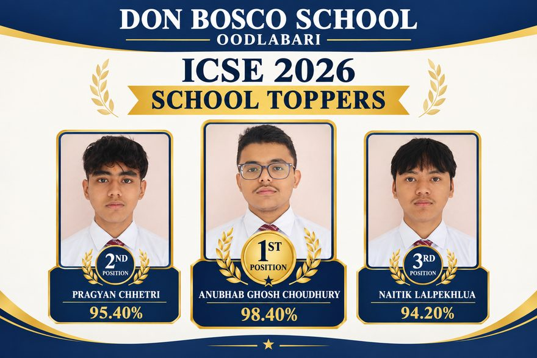

Academics
The CISCE ICSE and ISC curricula, from UKG to Class XII, with three streams at the Plus Two level.
Two stages, one school
The school is affiliated to the Council for the Indian School Certificate Examinations, New Delhi, School Code WB366. Children enter at UKG and study through to Class XII in one campus.
ICSE, UKG to Class X. The foundation years: reading, writing, number work, science, social studies, languages, art, sport and values education, taught through smart classrooms and activity-based learning.
ISC, Classes XI and XII. The Plus Two years, with three streams to choose from: Science, Commerce and Humanities. Admission to Class XI is normally reserved for the school's own ICSE students and is decided on academic and non-academic performance, including conduct.

Class XI streams
Choose a stream to see its subjects and the minimum Class X aggregate needed for entry. Class XI admission is provisional until Board results and the original mark sheet are submitted.
Science
Class XI entry: minimum 80% aggregate in the Class X board examination.
- Physics
- Chemistry
- Mathematics or Biology
Commerce
Class XI entry: minimum 70% aggregate in the Class X board examination.
- Accounts
- Business Studies
- Economics or Mathematics
Humanities
Class XI entry: minimum 60% aggregate in the Class X board examination.
- History
- Sociology
- Political Science
- Economics
Computer Science is offered in all three streams, and Physical Education is available as an additional subject.
How learning works here
The school's stated approach puts skill-based learning beside examination preparation: creativity, critical thinking and personal growth, not marks alone. Teachers are trained with academic tools and emotional intelligence, so each child is supported with care and empathy.
Learning also goes outdoors. Environmental awareness and stewardship are taught through outdoor learning, and healthy technology habits are promoted alongside social and emotional well-being.
Assessment is continuous and comprehensive: class tests, unit tests, open-book examinations and two term assessments through the year. The curriculum follows NEP 2020 and builds 21st-century skills — collaboration, communication, digital literacy and adaptability — through experiential learning.
Students also take part in national and international Olympiads in Science, Mathematics, English, Social Studies, General Knowledge and Computer Science, and in inter-school, sub-divisional, district and state competitions in culture and sport.
Career guidance sessions with experts run through the year, alongside sessions on mental health, financial literacy and value education.

Syllabus 2026–27
The full syllabus for every class, as published by the school for the academic session 2026–27. Each document opens as a PDF.
ICSE 2026 results
The school's top three scorers in the ICSE 2026 examination, as published by the school.

Admissions open for UKG to Class 11
Forms close 10 December 2026. See the dates, the process and the documents needed.